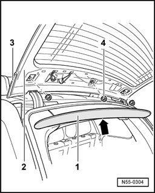
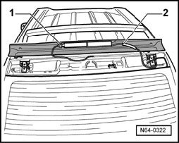
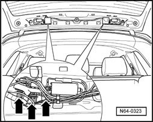
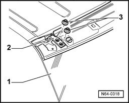

Hinged Tailgate Window, Removing and Installing
Hinged Tailgate Window, Removing And Installing

- Using a small screwdriver, unclip and remove -arrow- the cover -1- from the hinged window -2-.
- Remove the hex nut -4- for the rear spoiler -3-.

- Raise rear spoiler slightly and separate brake light connector -1- and hose connection -2- for spray nozzle.
- Now rear spoiler can be removed completely.

- Separate electrical connections on left and right.

- Loosen the four hex nuts -3-.
- Open hinged window.
- Remove nuts -3- completely and remove hinged window -1- from hinges -2- with the assistance of a second technician.